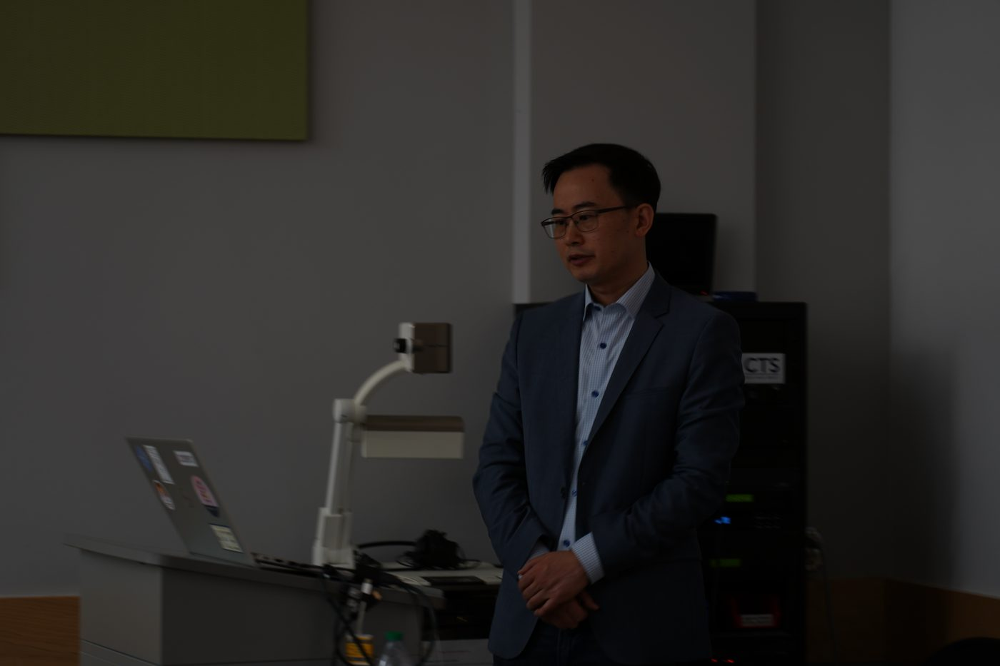
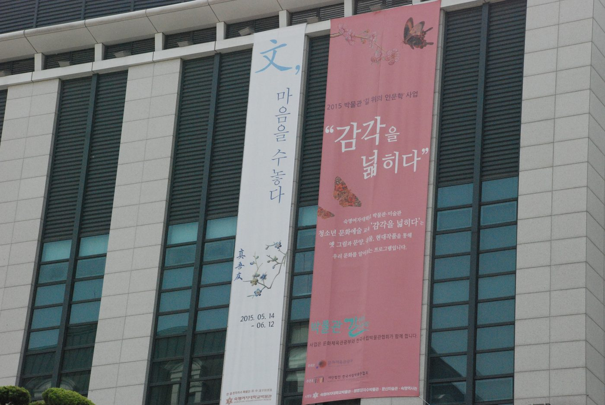
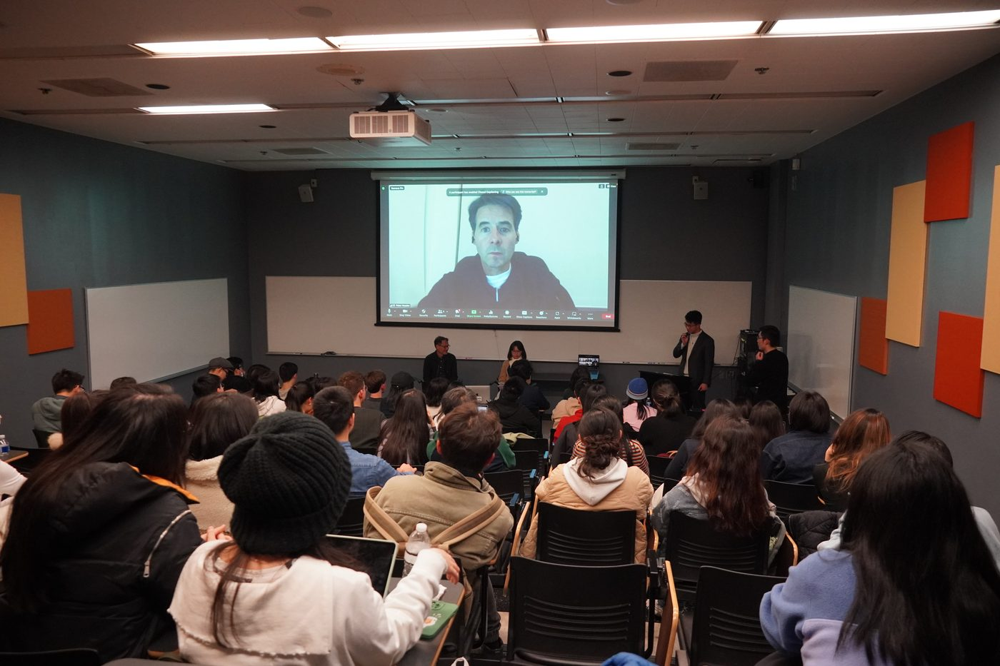
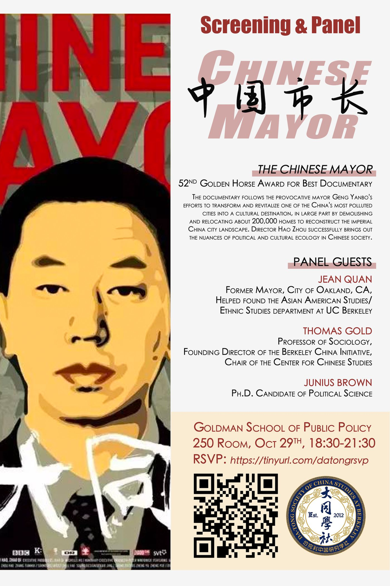
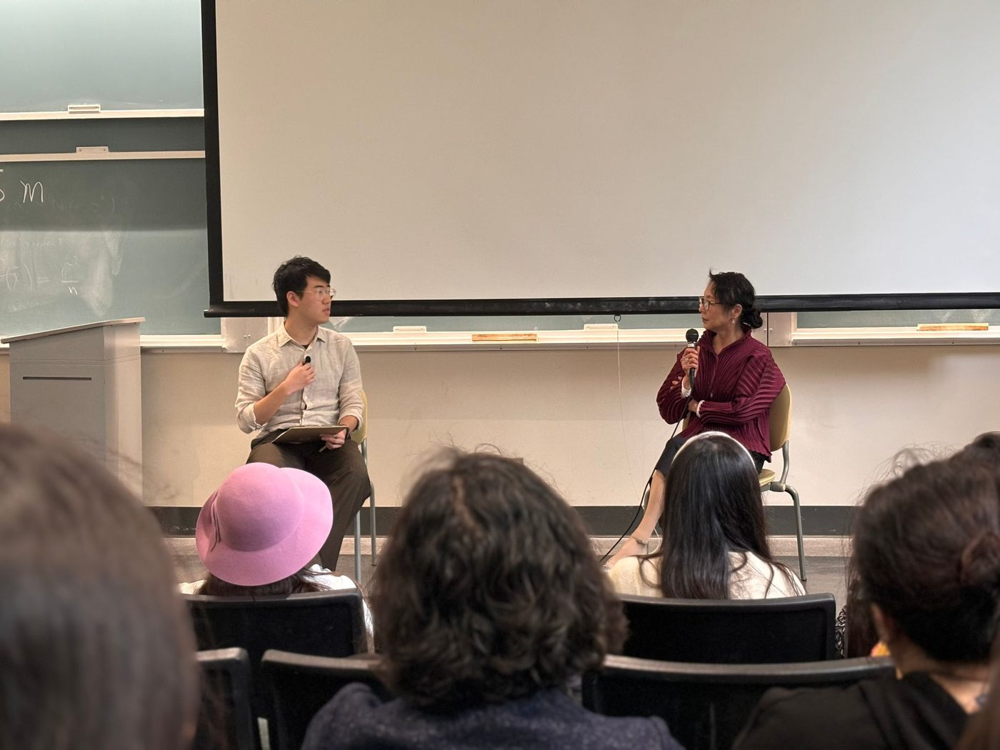
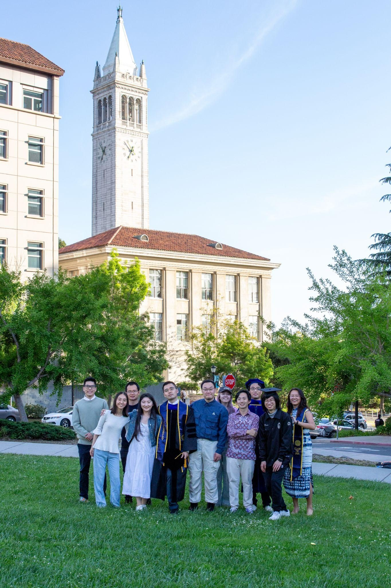
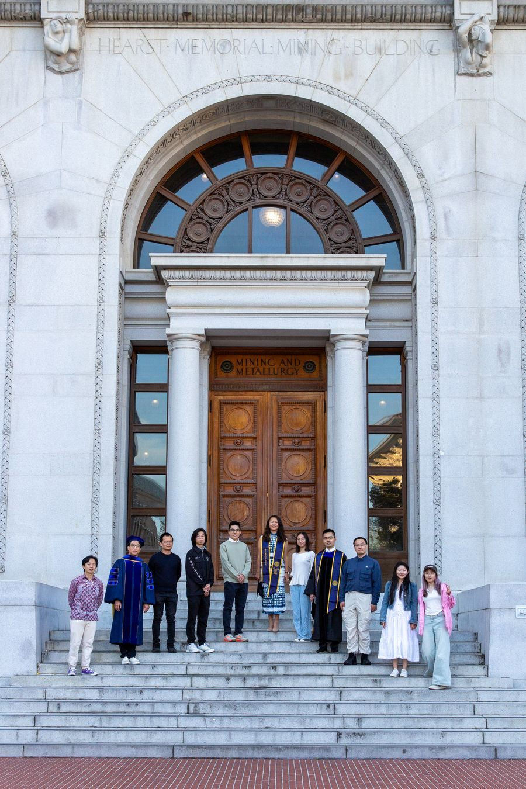
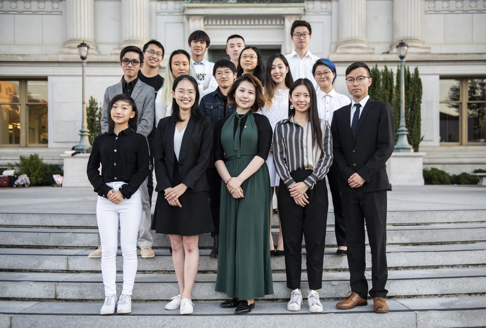
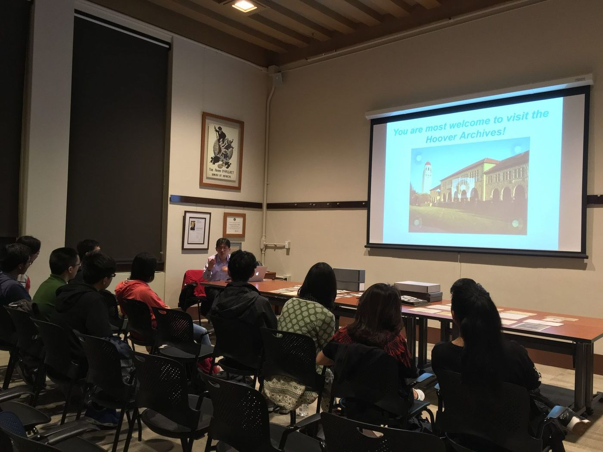
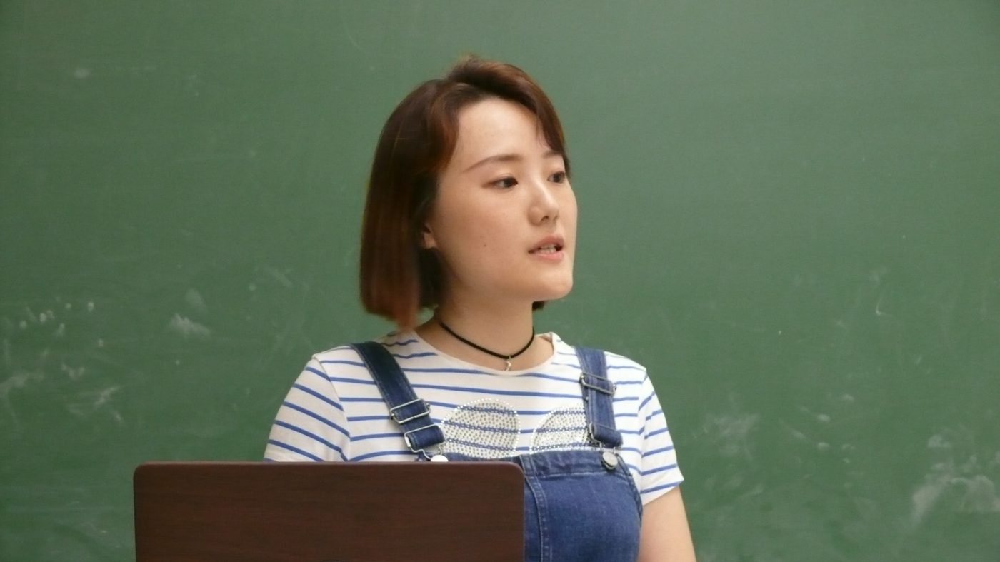

Public Events
Lectures, film screenings, conversations, and other public programs connecting our community with scholars, writers, artists, and audiences.
Browse the gallery by clicking any image. Use the category buttons to filter.
Recent event
A Conversation with Laura Wen-yu Young
Datong Society and the East Asian Library hosted Laura Wen-yu Young of Wang and Wang, LLP for an evening of remarks and open discussion.
Seminar Room 341, C. V. Starr East Asian Library · UC Berkeley
Recent event
KŪKAI 空海 — Screening & Discussion
A documentary on Kūkai’s journey from Japan to Tang China, followed by an online conversation with director Yue Ye. Co-hosted with C. V. Starr East Asian Library and Deep Value. Classical Chinese narration with English subtitles; film runtime: 97 minutes.
Anthropology & Art Practice Building, Room 160 · UC Berkeley
October 21 · Conversation with Laura Wen-yu Young
Group photos at the C. V. Starr East Asian Library, UC Berkeley.


October 12 · KŪKAI 空海 — Screening & Discussion
Photos: Siche and Weiran.


Past Events
Our archive includes public programs and other society activities since 2012.

朱可亮律师讲座：在美华人 vs 美国总统The WeChat Lawsuit Against Trump
从 2020 年微信禁令谈起，律师朱可亮先生深入拆解华人社群诉总统行政令的起源、历程与法律策略，并反思第一修正案在数字时代的边界。讲座后 Q&A 持续到深夜。



韩国淑明女子大学汉字刺绣枕顶展Modern Chinese Embroidery on Pillow Covers
与淑明女子大学博物馆联合办展——近代中国刺绣枕顶首次公开展出。配套展品清单、志愿者排班、借展协议与讲座海报均由大同学社独立执行，是社团史上规模最大的对外活动。



《三峡好人》放映与学者分享Still Life — Screening & Discussion
贾樟柯获威尼斯金狮奖影片。2015 年首映后由东亚系学者做评论导读；2023 年春季应社友要求加映一次。



《中国市长》放映与座谈The Chinese Mayor — Screening & Panel
聚焦山西大同前市长耿彦波的城市改造纪录片。2021 年秋季邀请导演周浩线上对谈，配套双语海报、活动流程与新闻稿均由本社撰写。


严歌苓《米拉蒂》新书签售会Author Talk & Book Signing — Geling Yan
海外作家严歌苓女士最新长篇《米拉蒂》中文版首次在湾区亮相。讲座后由作者亲笔签售，社友近距离对话。



当代中国 DeCal 学生课程Global Studies 198 — Contemporary China
由东亚系主任 Andrew F. Jones 教授赞助、1 学分官方选修课。从 2020 年《A History and Many Stories》到 2022 年《A History of Unfinished Tales》，持续多学年，是社团对外学术输出的代表项目。



2025 春季毕业合影Spring 2025 — Graduation Portraits
社友们在 Berkeley 校园地标前穿着学士袍的纪念合影。这张主要照片是 Hearst Memorial Mining Building 台阶前 11 人合影；其余包括 Sather Tower、Doe Library 等场景的合影。



秋季沙龙季 & 社团合影Fall 2018 — Salons & Member Portraits
中国政治思想史、《蒋公的面子》电影回顾、社团招新、期末合影。



Hoover Institution 档案馆参访Stanford Hoover Institution — Archive Visit
走进斯坦福胡佛研究所，近距离观看民国时期与现代中国的珍贵档案原件。



"Let's Talk About Social Science"跨学科沙龙 — 历史、社会学、政治学的对话
15 位同学围绕"什么是好的社科研究"展开 90 分钟讲读与提问，奠定大同学社小型沙龙的传统。


社区生活：Retreat 与毕业 CitationAnnual Retreats & Senior Citations
Marina 与 Santa Rosa 春秋两次 Retreat、Doe Library 图书馆小组、Senior Fellow 毕业论文展示（Amy Loo, Monica Liu）。